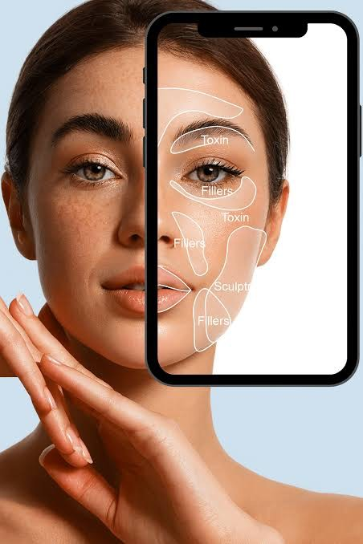

How apps use photos to look at skin concerns.

1. Artificial Intelligence in Dermatology: Addressing Gaps in Pediatric and Skin-of-Color Populations
Written by: Journal of Investigative Dermatology (research authors)
Website: Read the article here
This focused literature review considers how artificial intelligence performs in dermatology when applied to children and people with darker skin tones. It explains that computer models can learn to identify patterns in skin photographs, but their performance depends on the populations represented in their training and evaluation datasets. The review describes gaps in pediatric research and limited validation among several darker skin categories. For a technology project, this source is valuable because it connects an apparently simple phone-based skin scan to the underlying computer science questions of data selection, algorithm testing, and fairness. It also helps explain why a promising laboratory result is not the same as a dependable medical diagnosis in everyday use. Its main lesson is that inclusive datasets, transparent testing, and clinician oversight are essential before image-analysis software can be trusted across diverse users.
2. Unveiling Artificial Intelligence’s Diagnostic Power and Challenges in Dermatology for Skin of Color
Written by: Nwaubani and colleagues
Website: Read the article here
This review examines both the potential and limitations of artificial intelligence for recognizing skin conditions in patients with skin of color. It discusses how image-based systems may support dermatologists by identifying visual patterns and offering decision support. However, it emphasizes a central challenge: training collections may contain too few images of darker skin, making it difficult to establish whether a system works equally well for everyone. The article is especially relevant to skincare technology because consumer applications sometimes advertise personalized analysis without explaining how the software was validated. The source encourages readers to distinguish a commercial skincare suggestion from a clinical diagnosis. It also provides a useful ethical perspective on algorithmic bias, representation, and equitable access. This research supports the argument that responsible beauty technology requires both technical innovation and meaningful evaluation across different populations.